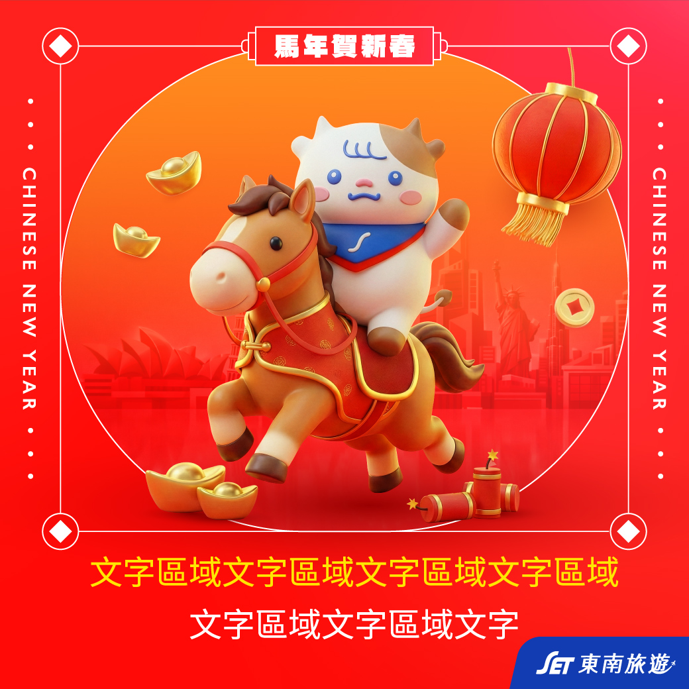

2026 Mid-Year Performance Review
2026 上半年
工作成果展示
透過代表性專案整理 2026 上半年設計工作成果，涵蓋行銷頁、Banner、POI 模組化及 AI 應用等面向，呈現執行歷程、流程優化與未來發展方向。
Overview
成果總覽
以代表性專案類型整理上半年成果，呈現POI模組規劃、頁面組合器、行銷頁、BN案件與AI導入等工作面向。
上半年主軸
上半年除完成多項行銷頁與BN廣告案件外，也持續累積 POI 視覺模組，建立可重複運用的設計資產供團隊使用，並進一步發展 POI 頁面組合器，作為設計與企劃溝通的輔助工具。 同時持續探索 AI 工具應用，嘗試 3D 動畫、AR 等不同方向，拓展設計工作之外的更多可能性。
Key Project
POI 視覺模組化與組合器
Landing Pages
上線行銷頁專案
精選上半年具代表性的行銷頁專案，涵蓋大型活動、會員經營、目的地推廣與季節主題等不同類型頁面，呈現從企劃需求到視覺執行的設計成果。
Motion Design
AI 動畫與賀卡製作
透過 AI 工具嘗試動態賀卡、短動畫與節慶視覺創作，累積腳本規劃、畫面設計與影音輸出經驗。

AI Design Application
AI 導入成果
持續研究並建立適合自身的 AI 工作流程，將學習成果實際應用於設計工作中，協助提升效率、拓展設計執行能力，並完成過去未曾接觸的專案類型。
AI輔助視覺發想
運用 AI 進行前期概念探索、風格研究與視覺方向發想，加速設計提案準備流程。
AI加速素材製作
協助產製視覺素材、延伸版型與情境圖，大幅縮短重複性製作時間。
建立個人AI流程
持續研究各類 AI 工具與操作方式，建立符合自身工作需求的設計流程與方法。
拓展設計能力
透過 AI 工具輔助，完成過去較少接觸的網站、組合器、動畫等跨領域專案。
H2 Roadmap
下半年工作目標規劃
POI 視覺模組化與組合器落地
持續完善 POI 視覺元件與組合器工具，建立可重複應用的模組系統，提供企劃 與設計溝通 Wireframe 規劃與頁面建置效率。
品牌影音廣告 AIGC 標準化製程
建立旅遊影音 Prompt 規範與製作 SOP，逐步形成可複製的 AI 影音工作流程與品牌內容製作標準。